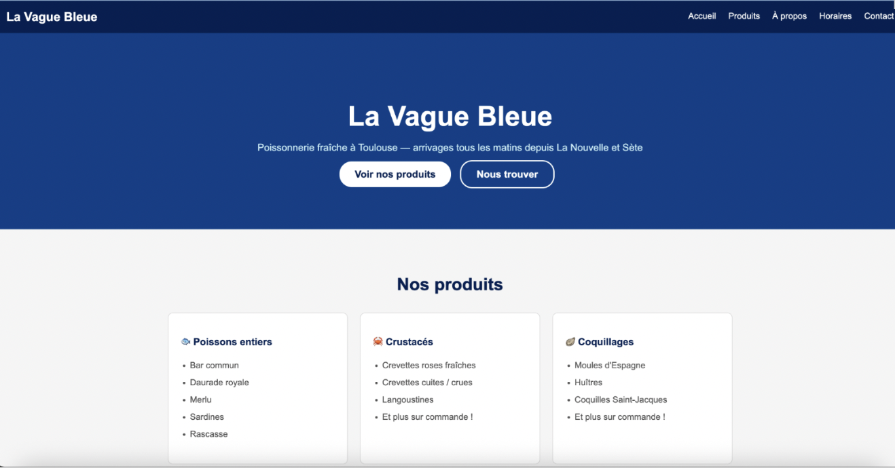
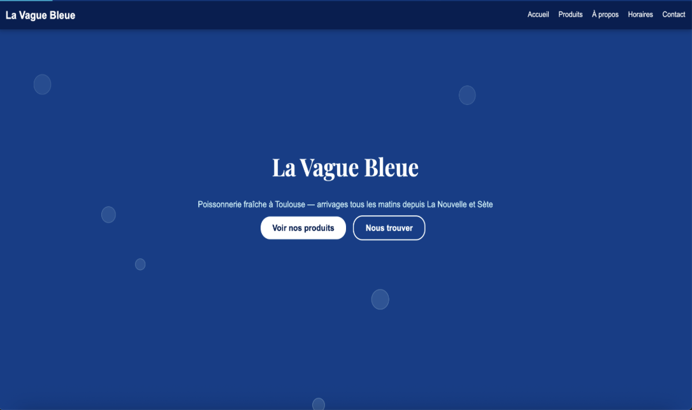
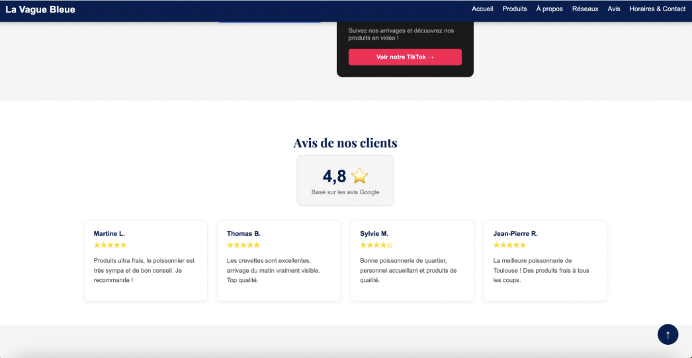
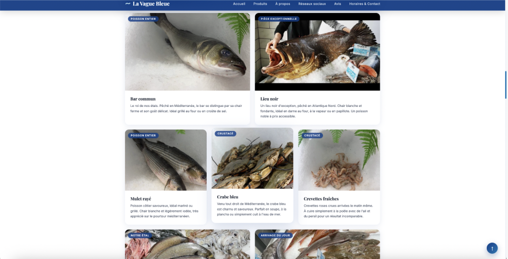

// projets/stage
Création d'un site vitrine pour une poissonnerie, en HTML, CSS et JavaScript pur, sans framework ni CMS — un choix adapté à mon niveau de première année, pour un site léger et facile à héberger.

Après avoir échangé avec le gérant sur ses attentes (un site simple et propre qui donne envie de venir), j'ai créé les 3 fichiers de base et écrit la structure HTML complète.

Le fichier script.js, encore vide en fin de semaine 1, a
été rempli progressivement en testant chaque effet dans le navigateur
avant de passer au suivant.

Ajout de tout ce qui concerne la communication de la poissonnerie : photo réelle de la boutique en fond de hero, bouton Facebook, avis clients et un formulaire de commentaire avec notation par étoiles cliquables, validé en JavaScript.

Création d'une galerie de 15 vraies photos fournies par le client, organisée en grille CSS de 6 colonnes avec une bannière panoramique en en-tête et un effet de zoom au survol.
grid-column: span 3) puis 3 petites (span 2), pour que chaque rangée totalise
6 colonnes.
Ce projet m'a permis de suivre un site de A à Z, de la structure HTML de base jusqu'à une expérience complète avec animations, formulaire interactif et galerie produits — tout en gérant les échanges avec un vrai client et en trouvant des solutions concrètes aux problèmes rencontrés (embed cassé, grille avec des trous) plutôt que de rester bloqué.
Retrouvez mes 4 rapports de stage hebdomadaires ci-dessous, disponibles en téléchargement :